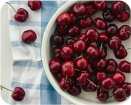

[Dole] 아보카도
2kg
중량
1kg소비기한
24/10/15까지상세설명
부드럽고 고소한 아보카도 과육은 마치 싱그러운 버터를 한 입 베어 문 것 같은 착각에 빠지게 만들어요. 울퉁불퉁하고 투박한 겉모습과 달리, 반을 가르면 등장하는 매끄러운 과육과 동글동글한 씨앗이 눈길을 끌지요. 샐러드, 비빔밥, 샌드위치 등 다양한 요리에 활용할 수 있는 만능 식재료이니까요.업체명
빌즈 강남업체주소
서울 강남구 테헤란로 142 아크플레이스 2층영업시간
오전 10:00 - 오후 08:00업체 대표번호
025681353